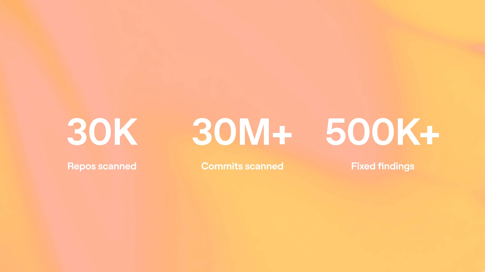

We’re expanding Daybreak to help democratize patching vulnerable software at machine speed. For example, we’ve applied our models to discover and generate patches for critical vulnerabilities in major browsers, network infrastructure, and operating systems such as FreeBSD and the Linux kernel. To scale the impact of these capabilities:
Codex Security: We’re launching an update to the Codex Security plugin, which implements what we’ve learned from internal and customer usage of our models into a solution to accelerate the process of discovering and patching vulnerabilities in existing systems as well as automatically preventing new vulnerabilities from ever reaching production.
GPT‑5.5‑Cyber: Following an initial permissive-only preview, we’re launching the full version of GPT‑5.5‑Cyber through our continued limited release to trusted defenders. This model sets new state-of-the-art performance on CyberGym, reaching 85.6% compared with 81.8% for GPT‑5.5.
Daybreak Cyber Partner Program: Enabling security partners to scale the benefits to more organizations through our most capable models with trusted access in their products and services.
Patch the Planet: an initiative founded with Trail of Bits in collaboration with HackerOne, Calif, researchers, and maintainers to help widely used open-source projects move from findings to fixes.
More than 30 open-source projects have committed to participate, with initial participants including cURL, Go, Python, Sigstore, and pyca/cryptography.
With Patch the Planet, we are working with researchers, maintainers, enterprises, and partners to make powerful cyber capability available to defenders with appropriate access, governance, and human oversight. Hear from Clint and Dan about this here(opens in a new window).
Cyber defense at an inflection point
AI has changed the physics of cybersecurity. Frontier AI models have been increasingly accelerating vulnerability discovery. The bottleneck historically has been finding vulnerabilities, but now defenders are overwhelmed with the number of vulnerabilities found. Instead, the bottleneck is now patching vulnerabilities.
For years, finding serious vulnerabilities required rare expertise, time, and deep familiarity with complex systems. Now, models can navigate large codebases, reason through attack paths, validate hypotheses, and surface security issues that might otherwise stay hidden. Defenders absolutely need access to these capabilities, and also need tools to fix what we can now find, before attackers do.
Vulnerability reports, on their own, do not protect anyone. The value comes from validating the issue, understanding its impact, developing and testing a patch, coordinating disclosure, and helping teams deploy the fix. We are investing alongside our partners to improve these latter steps, in order to turbocharge defenders and convert model capability into real-world risk reduction.
Frontier defensive capabilities should not be concentrated in the hands of a few. Software touches all aspects of life, from critical infrastructure to business applications and government networks. As AI changes the pace of vulnerability discovery, defenders everywhere need democratized access to these models to find, fix, and protect their infrastructure before attackers can identify and abuse these flaws.
Daybreak brings together the frontier cyber capabilities OpenAI’s models, Trusted Access for Cyber, Codex Security workflows, and ecosystem partners to help approved defenders validate vulnerabilities, prioritize risk, generate and test fixes, and produce evidence inside existing security and development workflows. Our goal is to provide organizations the tools they need to stay secure even as the cyberthreat landscape continues to accelerate.
From findings to fixes with Codex Security
Since launching Codex Security cloud in research preview in March, it has scanned over 30 million commits across more than 30,000 codebases; human reviewers have manually marked more than 70,000 findings as fixed, and over 500,000 findings have automatically been determined to be fixed.
This is the scale at which patching must now happen.

We built Codex Security around a simple premise: put the equivalent of a security engineer next to every software developer by integrating directly into Codex. Rather than just generating alerts, Codex Security will understand your team’s code and its threat model (or generate one if it doesn’t exist), identify plausible vulnerabilities, determine whether affected code is reachable, gather evidence to provide validation steps, develop a targeted patch, and verify the result. Humans remain in control of which findings to investigate, which changes to apply, and what information to share.
Today, we’re releasing an update to the Codex Security plugin that enables out-of-the-box defensive security workflows. Developers can run deep scans or review recent changes, generate reports with severity, affected code locations, validation evidence, and remediation guidance, trace attack paths, build threat models, validate findings, and generate codebase-specific patches for review.
The plugin can also triage and validate existing findings from scanners, advisories, bug-bounty reports, or ticketing systems, then automate patch generation at scale to quickly close a backlog of vulnerabilities. When Codex Security completes a scan, it can also export to an existing vulnerability management system or integrate into tools with SARIF files, CodeQL queries, and more. The plugin makes these capabilities much more accessible to support automated pipelines with Codex CLI or integrate into developer workflows in the Codex app.
Updating GPT‑5.5‑Cyber: pairing capability with permissiveness
We are releasing an update to GPT‑5.5‑Cyber, our model that is both more permissive and more capable for advanced, authorized cybersecurity work.
Our initial preview of GPT‑5.5‑Cyber was designed primarily to reduce unnecessary refusals in specialized workflows. This update goes further. It is our strongest model yet for finding and helping patch software vulnerabilities, while retaining GPT‑5.5’s general-purpose intelligence and ability to work across long, complex tasks.
The model can sustain deeper analysis across large codebases: identifying security-relevant components, tracing whether vulnerable code is reachable, validating likely issues in controlled environments, developing and testing patches, and preparing evidence for human review. The goal is to help defenders move through the full remediation loop—not simply produce more findings.
On CyberGym, which measures whether an agent can reproduce known vulnerabilities in software environments, the updated GPT‑5.5‑Cyber reached 85.6% in single-model evaluations, compared with 81.8% for GPT‑5.5. This is the highest CyberGym score we have measured from a single model.
GPT‑5.5‑Cyber also outperformed GPT‑5.5 on two demanding real-world security benchmarks: 39.5% versus 25.95% on ExploitGym, which tests whether agents can turn known vulnerabilities into working exploits that achieve unauthorized code execution. On SEC-bench Pro, which evaluates long-horizon vulnerability discovery and proof-of-concept generation across complex software targets, GPT‑5.5‑Cyber reached 69.8%, compared with 63.1% for GPT‑5.5.
Benchmarks are only one part of the story. What matters in practice is whether a model can find real vulnerabilities, distinguish actionable issues from noise, and help defenders land fixes safely. We are continuing to evaluate the model’s performance on complex repositories and real remediation workflows as coordinated disclosures conclude.
We’ve had ongoing dialogue with the U.S. government about our cyber approach, including today’s announcements and on our preparation for upcoming model releases. That includes continued collaboration with the Center for AI Standards and Innovation (CAISI) on pre-deployment testing for GPT‑5.5 and 5.5-Cyber, and work with the Office of the National Cyber Director (ONCD) and Office of Science and Technology Policy (OSTP) on implementation of the recent Executive Order(opens in a new window) and associated industry standards.
For most defenders, GPT‑5.5 with Trusted Access for Cyber and Codex Security remains the right starting point. GPT‑5.5‑Cyber is intended for verified defenders whose authorized work requires our most advanced cyber capabilities and more permissive behavior, paired with stronger verification, monitoring, scoped controls, and review. Across early Daybreak work, GPT‑5.5 and Codex Security have helped defenders identify and validate vulnerabilities in widely used systems, including Firefox, V8, Safari, OpenBSD, FreeBSD, and HTTP/2 implementations.
Working with the security ecosystem
As part of this expansion, we’re also launching the OpenAI Daybreak Cyber Partner Program with leading security software and services providers. Through the program, participating partners can use GPT‑5.5 with Trusted Access for Cyber—our primary model for most defensive cybersecurity workflows—in the security products and services they provide to customers. This allows their customers to benefit from the model’s defensive capabilities and make their software more resilient, but keeps direct model access in the hands of participating partners.

We will also collaborate with program partners to continue to strengthen the safeguards, monitoring, and abuse-prevention standards needed to deploy these capabilities responsibly across the security ecosystem. We’re rolling this out with an initial set of partners and plan to continue expanding to more organizations in the coming months.
Patch the Planet: landing fixes in open-source
Patch the Planet is an initiative built to help maintainers move from findings to fixes. Founded with Trail of Bits, and in collaboration with HackerOne and Calif, we are funding expert security researchers and equipping them with Codex Security and our advanced models to work directly with open source maintainers.
Open source software powers products, public services, developer tools, and critical infrastructure across sectors. A vulnerability in a widely used networking library can affect thousands of downstream systems. Yet many of these projects are sustained by very small teams with limited time and funding. Research from the Linux Foundation and Harvard(opens in a new window) found that 94 percent of the widely used projects it studied had fewer than ten developers responsible for more than 90 percent of the code added in a year.
As AI makes it possible to find and patch more vulnerabilities faster, it also creates more work for maintainers, who need to sift through thousands of reports, many of which are low-quality false positives. Maintainers should not be left with more reports and no additional capacity to fix them. That’s why Patch the Planet is built around expert human security review.
Each engagement begins with consultation between our security researchers and the maintainers they are helping. Maintainers define their priorities, preferences, and established disclosure processes. Patch the Planet security researchers then manage the work end to end–validating and deduplicating both vulnerabilities and patches before they reach maintainers, significantly reducing the burden on maintainers and speeding up remediation.
Participating projects receive ChatGPT Pro, conditional access to Codex Security, and API credits for core development, maintainer automation, and release workflows.
The initial five-day sprint across multiple projects surfaced hundreds of issues for review, merged dozens of patches with more underway, and built reusable fuzzing, variant-analysis, differential-testing, and specification-based testing workflows. You can read more on the Trail of Bits blog here(opens in a new window).
Finding vulnerabilities is important, but it’s landing the fix that protects the world, and that takes collaboration and community support.
Protecting critical infrastructure and sensitive systems
We are also collaborating closely with governments and institutions around the world to uplift their defensive cybersecurity capabilities and protect critical infrastructure. We have been working closely with the US Government and relevant federal agencies as we prepare for increasingly cyber-capable AI models. In the past month we have already established Trusted Access for Cyber partnerships with Australia, Canada, France, Germany, Japan, Republic of Korea, and EU institutions like ENISA. We also have a growing and trusted partnership with the UK government around cyber, testing and evaluation, and other areas of mutual interest.
We plan to work directly with eligible operators of critical infrastructure, including government networks, to develop safeguards tailored to the systems they operate. The focus of this work is to make advanced AI more useful to defenders, while making it harder for malicious actors to cause real-world harm.
We will also work with enterprise customers and trusted partners to incorporate broader context and identifiers about the specific systems they operate or protect, strengthening our cybersecurity safeguards and ability to prevent harmful cyber activity involving critical services.
What comes next
Daybreak brings together models, Codex Security, Patch the Planet, expert researchers, maintainers, security partners, critical infrastructure operators, and trusted access controls to help human defenders rise to the challenge.
Organizations across the public and private sectors can work with OpenAI Daybreak to identify, validate, and remediate vulnerabilities across the software they build and rely on. Developers and maintainers can run Codex Security on code they own, review the findings, and help land fixes. Security partners and practitioners can use our frontier models to strengthen their defensive tools and bring those capabilities to more organizations quickly.
The goal is to move beyond using models to find more vulnerabilities, towards a world of safer software and cyber resilience.